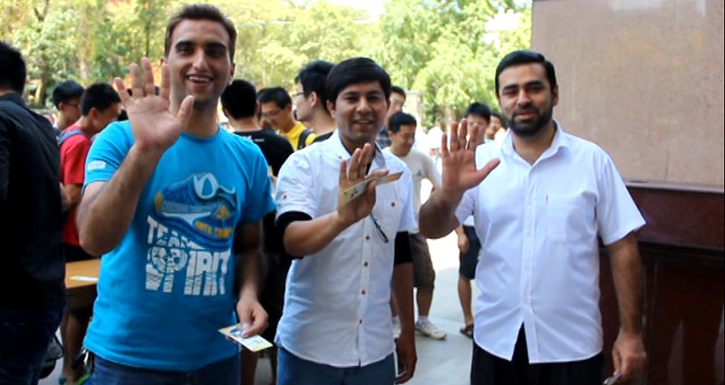

Outline and detail how your software effects Human Practices in Synthetic Biology. Such topics include: safety, security, ethics, or ownership, sharing, and innovation.
Our software effects Human Practice in Synthetic Biology in some ways:
Safety: Thought most synthetic biological experiments will be safe, there still some dangerous attempt about inputting disease gene into bacteria. Our software could figure out the gene's effects in advanced to experiment. So it makes the synthetic biological experiments more safety to some extent.
Sharing: Not only open all of our codes on GitHub, our team also created an integrate API of our source code which detailed introduce the structure and function of all the code. So we really hope everyone sharing and developing our software everywhere!
Innovation: Just as we said, our software is the first one which focuses on the forward and reverse analysis of the effect of input gene. We also create a brand new algorithm and idea to figure out the change of GRN after new gene's coming.
Promotion
This year, our promotion activity were held on our campus. We would like to
bring the spirit of IGEM to more and more teachers and students in USTC
At first, we found that there were few people knowing iGEM in our school, thus we wanted to attract more
students to get to know this competition and join iGEM.
In the preparation stage, we made lots of pretty bookmarks and cute badges with the introduction of iGEM
and our team logo. We decided to do something meaningful on both east and west campus in two days's
time.
It was an afternoon in early autumn and we were excited about doing something meaningful today. This
activity would be held in front of the dining hall.After being Asked about questions of iGEM, people
could be familiar with the competition as well as synthetic
biology. Bookmarks, badges and other souvenirs would be the prizes and it turned out that some projects of synthetic biology were most attractive. More and more people came towards us to answer questions and most of them were curious about iGEM. We were busy introducing this competition to them and meanwhile giving out the bookmarks to passersby. Many people were eager to know more about how to sign up for this competition. Additionally, we were also asked by our schoolmates about what abilities they should have to attend iGEM. Even little children got interested in iGEM and tried to read our poster.
Next day, promotion activity was held at a square in the east campus. More people came to this activity today. We were surrounded by crowds of people and occupied with questions about iGEM and its schedule. Surprisingly, a girl from high school could correctly tell us the exact meaning of synthetic biology. Looking at this lively scene, we felt proud of our activity and our team as well. At last, participants won their prizes and left us their "Hello, iGEM" videos.
We were happy that we sent out these presents and many people finally got to know iGEM. What's more, We hope that there would be more people who are interested in synthetic biology and programming joining in iGEM through our human practice